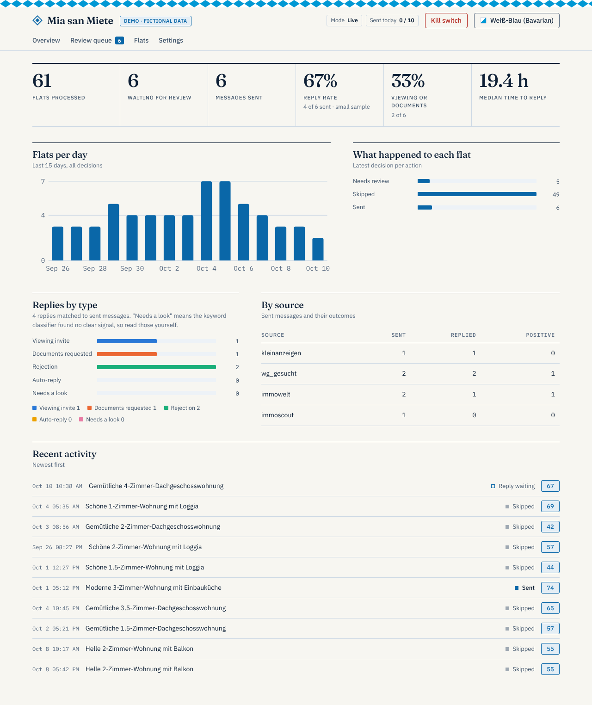
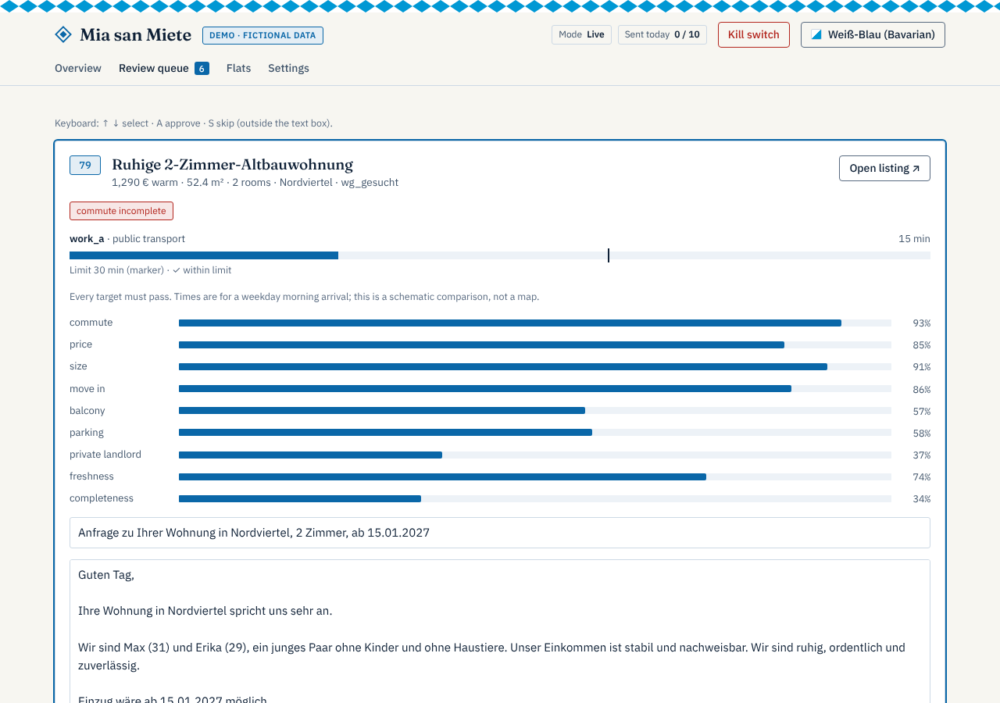
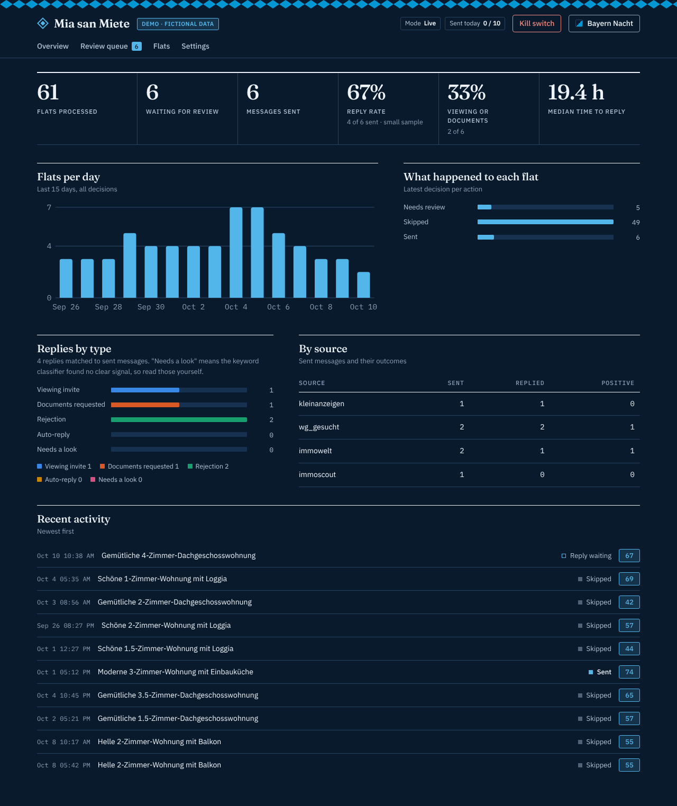
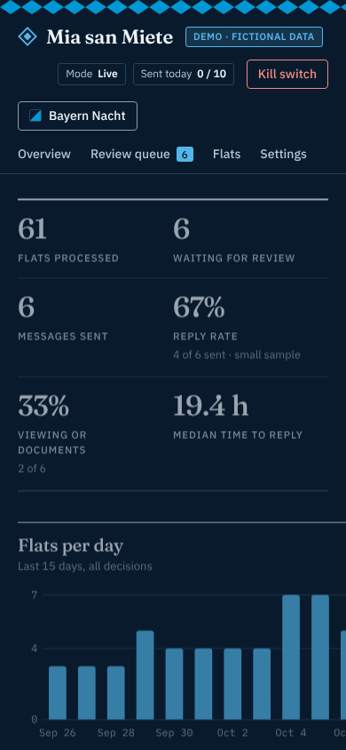

Personal rental agent · Germany
Finds, scores, drafts.
You decide.
Servus! Mia reads the alert emails your portals send you, filters and scores every flat with fixed rules, drafts a truthful message, and sends only under an explicit, capped policy. Out of the box, nothing is ever sent.

- Shadow mode firstIt logs what it would do. A kill switch and daily caps stand behind every send.
- No scraping, no loginIt reads your own alert emails over read-only IMAP.
- Local and privateYour data lives in gitignored files. A pre-commit hook guards the repository.
- Tested in the openCI on Python 3.11 to 3.13, MIT licensed.
How a flat travels through it
Every step is deterministic and explainable. A language model, if you run one, only writes a sentence or two about the listing, and a validator checks it against facts you allowed.
- Alert emailA saved search on a portal mails you a new listing. Mia reads that mailbox, read-only.
- Parse and dedupTitle, rent, size, rooms and place are extracted. The same flat on two portals counts once.
- Hard gatesRent, size, move-in, exclusions, scam signals, price per m². Any reject means skip.
- Commute and areaDoor-to-door transit or car time to your places, distance to the centre, walk to a stop.
- Score and decideA 0 to 100 score, then the policy: skip, review queue, would-send or send.
Built to be hard to misuse
Portals restrict automated access, and a wrong message to a landlord is hard to take back. The defaults reflect that.
Sending is off
send_policy.enabled is false and the mode is shadow. Live sending needs an allow-list of platforms, caps, quiet hours and a kill switch you can trigger with one command.
Truthful by construction
A draft may state only the facts you list in your profile. The validator rejects anything else and falls back to a fixed template.
No tricks
No captcha solving, no detection evasion, no portal logins. Platform sending is evaluated in a decision record, not built.
Where it stands
Checked on real data in Munich, October 2026. What is not yet checked says so.
| Part | State | Notes |
|---|---|---|
| ImmoScout24 alert mails | verified | Title, warm rent, size, rooms and district parse from real mail. |
| Immowelt alert mails | partial | Click-tracking links only; one redirect lookup per flat works for most cards. |
| Kleinanzeigen, WG-Gesucht, immobilien.de | waiting | Only account mails so far; formats unverified. |
| Transit and car routing | verified | MOTIS, door to door; car times have no live traffic. |
| Scheduled shadow run on a Mac | running | Every five minutes; nothing is sent. |
| Reply monitor and auto-reply | untested | Fictional tests only; not run on real replies. |
| Sending through portals | not built | By design. You send from the portal, or approve the email path in the queue. |
Read the roadmap for the plan and open work.
The dashboard
A local web app with a review queue, a shadow report, settings and five themes. Everything below is fictional demo data.



Try it in five minutes
The demo runs on fictional data: nothing real is read and nothing is sent.
git clone https://github.com/Telschow/mia-san-miete.git mia && cd mia
python3 -m venv .venv && . .venv/bin/activate
pip install -e ".[dev]"
mia demo # dashboard on fictional data
mia init # guided setup; writes your private, gitignored filesThen follow the how-to guide: alerts into an inbox, checks on real data, and one to two weeks in shadow mode before anything else.